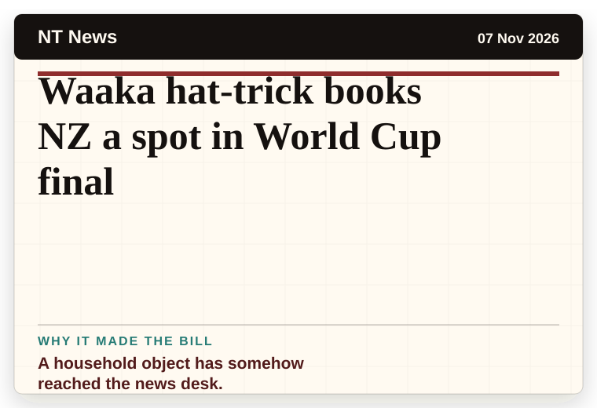
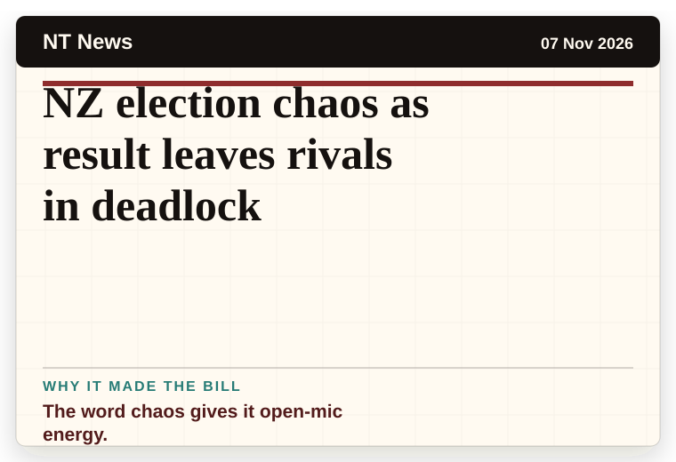
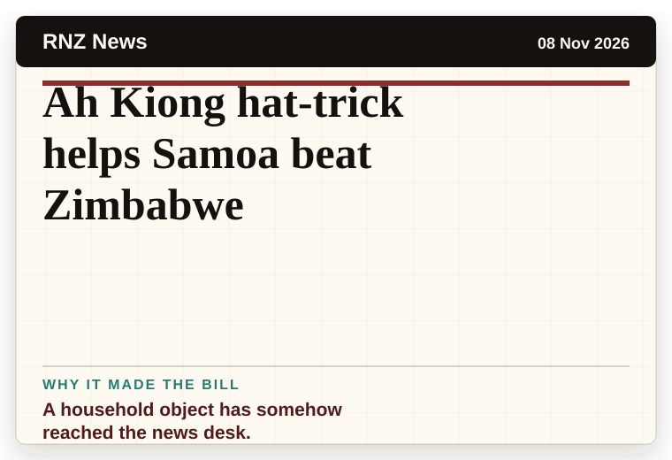
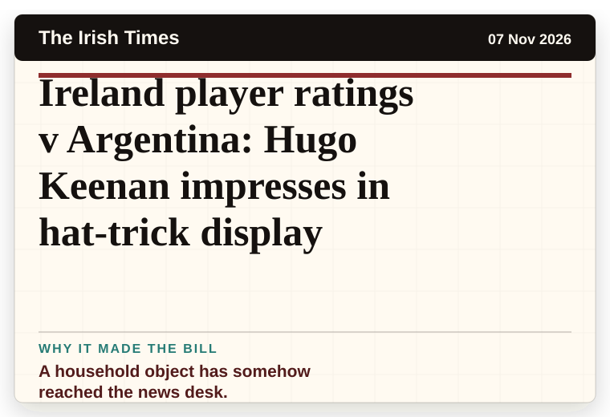
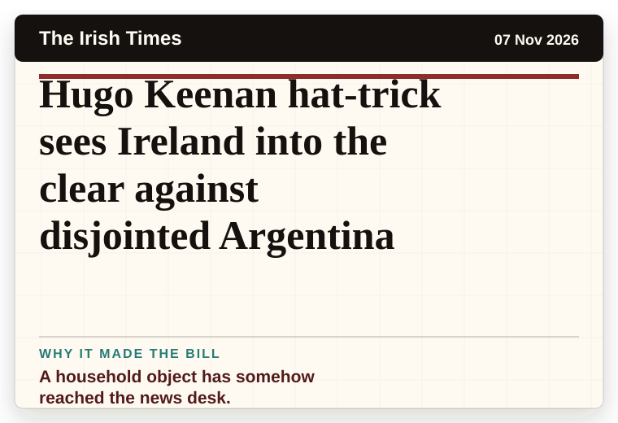
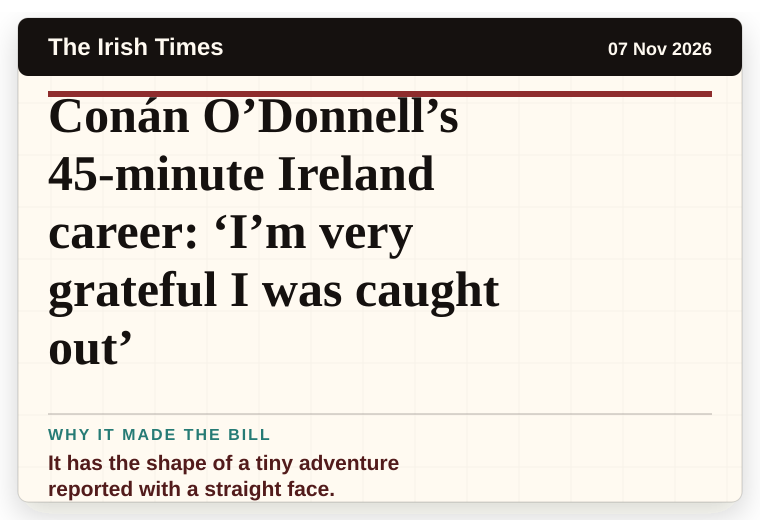
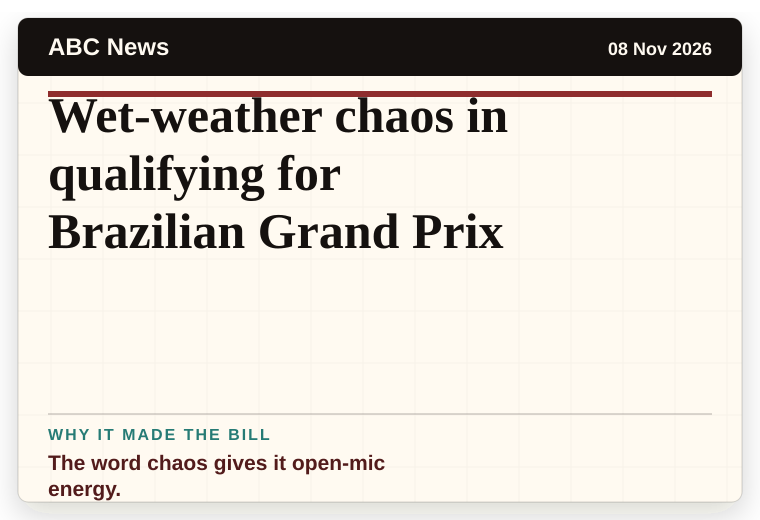

NT News
Australia
Waaka hat-trick books NZ a spot in World Cup final
A household object has somehow reached the news desk.
The latest daily picks, linked back to the original sources. Search the room, pick a source, or follow a headline out to the full story.
Record updated: 08 Nov 2026, 10:50 AM AEST
Showing 19 headline candidates from the refresh run completed on 08 Nov 2026, 10:50 AM AEST.

A household object has somehow reached the news desk.

The word chaos gives it open-mic energy.

It has the shape of a tiny adventure reported with a straight face.

It reads like the setup to a very dry question.

A household object has somehow reached the news desk.

A household object has somehow reached the news desk.

A very ordinary object has wandered into serious news.

The scale is doing deadpan comedy.

The scale is doing deadpan comedy.

The object list sounds like someone shuffled three different stories together.

A wonderfully specific detail has taken centre stage.

A wonderfully specific detail has taken centre stage.

A mystery is doing a lot of work in a very small sentence.

The headline is already trying not to laugh.

A household object has somehow reached the news desk.

A household object has somehow reached the news desk.

A household object has somehow reached the news desk.

It has the shape of a tiny adventure reported with a straight face.

The word chaos gives it open-mic energy.